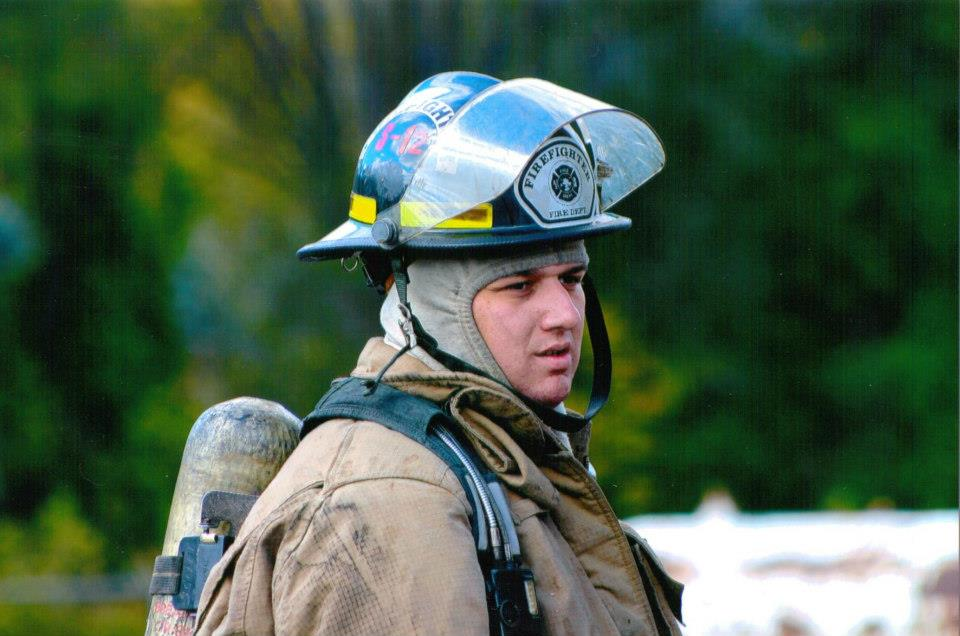
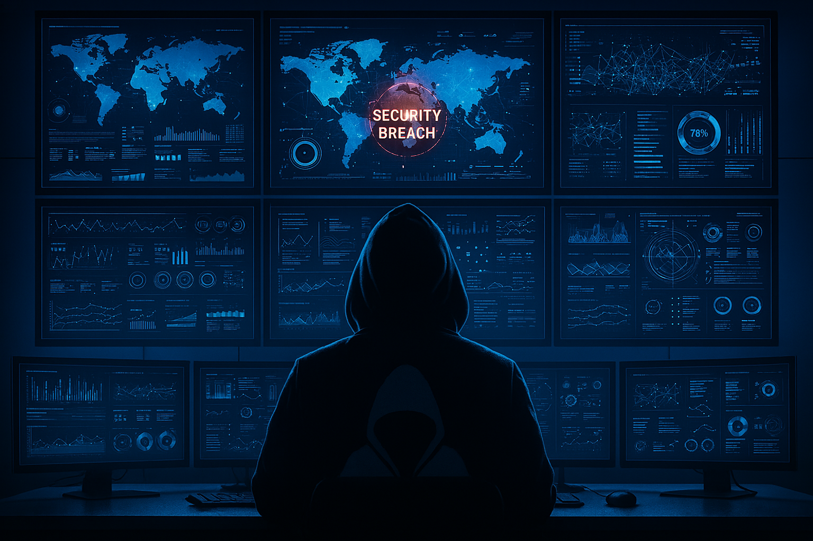
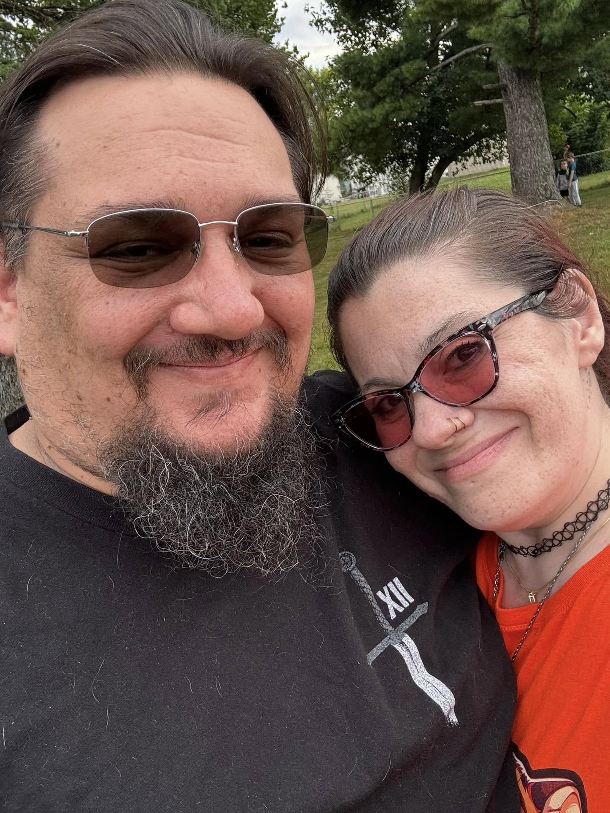

<article id="main">
  <section class="wrapper style5">
    <div class="inner">
      <header class="major">
        <h2>Strategic Cybersecurity Leadership</h2>
        <p>
          Villan Security is led by Brian Villanueva, an information security and enterprise risk professional
          bridging operational discipline, defensive resilience, and cross-domain security leadership.
        </p>
      </header>

      <div class="content">
        <p>The perspective behind Villan Security is grounded in real-world leadership across emergency services, physical security operations, and defensive cybersecurity.</p>

        <h3>Professional Background</h3>
        <p>
          <span class="image left">
            
          </span>
          My career is defined by leadership in high-consequence environments where clarity, accountability, and sound judgment are critical. I began in emergency services as a certified Illinois Firefighter and EMT, operating in time-critical situations that demanded calm decision-making under pressure. As a Basic Life Support Instructor, I trained others in life-saving skills, reinforcing my belief that strong systems are built through people, preparation, and trust.
        </p>

        <p>
          I later transitioned into physical security leadership, where I served as an operational lead and escalation point for a distributed team of more than 45 security officers and support staff across multiple geographically separated sites. In this role, I was responsible for incident coordination, policy enforcement, staffing continuity, and cross-functional response involving leadership, HR, legal, and external partners. This experience shaped my approach to security as a business-critical function grounded in real-world operations, not abstract controls.
        </p>

        <p>
          Building on this foundation, I moved into cybersecurity, where I now focus on defensive security, incident response, and risk-informed leadership. I combine hands-on technical depth with leadership experience spanning people management, vendor evaluation, and enterprise risk. My work includes security tooling assessments, incident response planning, governance support, and translating technical risk into actionable guidance for leadership and third parties.
        </p>

        <p>
          I maintain a strong commitment to continuous learning through certifications, graduate education, and practical labs such as TryHackMe and Hack The Box, with particular emphasis on cyber defense, ethical hacking, and adversary-informed security strategies.
        </p>

        <h3>Vision and Focus</h3>
        <p>
          <span class="image right">
            
          </span>
          I operate at the intersection of people, policy, and technology. I am currently pursuing a PhD in Information Technology with a focus on artificial intelligence and information security, with research centered on explainable AI, decision confidence, and security transparency. My goal is to help organizations move beyond checkbox compliance toward security programs that executives can understand, trust, and defend.
        </p>

        <p>
          I am particularly focused on converged security, bridging physical and cyber domains to improve incident response, governance, and organizational resilience. By applying emerging technologies such as AI in a transparent and defensible way, I aim to strengthen security programs that scale effectively while remaining grounded in operational reality.
        </p>

        <h3>Personal Perspective</h3>
        <p>
          <span class="image left" style="max-width: 28.5%; overflow: hidden; display: block; box-sizing: border-box;">
            
          </span>
          At the core of my work is my family. Since 2013, I have shared my life with my wife, my closest partner and constant source of support. Together, we are raising two children and are in the process of adopting our niece and nephew, building a home rooted in stability, responsibility, and long-term thinking.
        </p>

        <p>
          These priorities influence how I lead and how I approach security. I value integrity, accountability, and systems that are designed to endure, not just function. My goal is to build security programs that protect people, support organizations, and remain resilient under real-world pressure.
        </p>
      </div>
    </div>
  </section>
</article>
